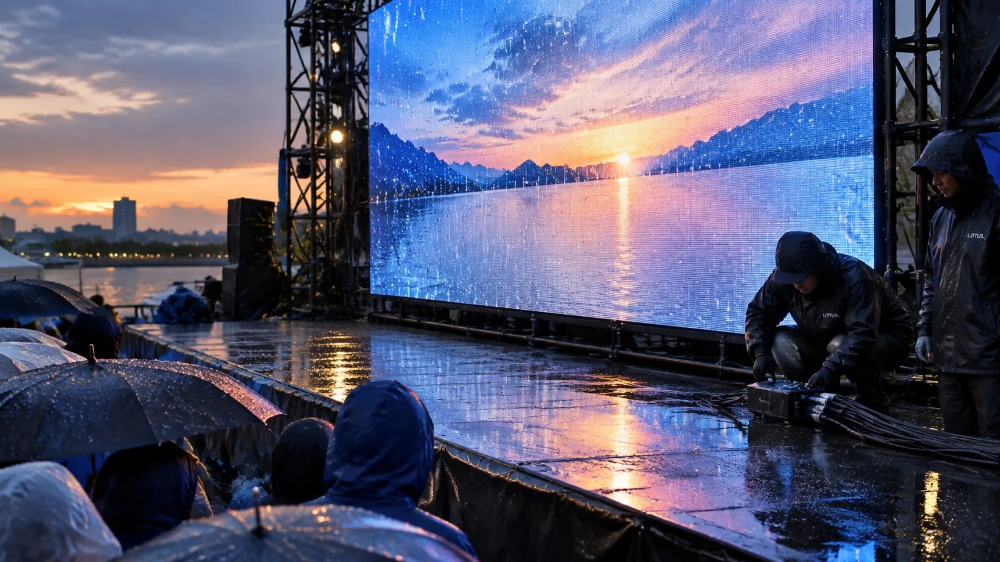

保護等級の記号
国際規格 IEC 60529(日本では JIS C 0920)で決められた表し方です。
LOTUS VISUAL JOURNAL / OUTDOOR
屋外の機材の仕様に出てくる「IP」の数字。
2つの数字を分けて読むと、何に強いのかが見えてきます。

国際規格 IEC 60529(日本では JIS C 0920)で決められた表し方です。
0〜6。大きいほど細かいものの侵入に強く、6は「粉じんの侵入がない」等級です。
0〜9。5は「あらゆる方向からの噴流水」に耐える等級。試験条件は、実際の雨・風・設置状態とは区別します。
実際の等級は、各機材の仕様書で確かめます。
01 / TWO NUMBERS
IP65 は「6」と「5」の2つの等級の組み合わせです。1つ目の数字が固形物(手や工具、粉じん)への保護、2つ目の数字が水への保護を表します。片方だけを試験した機材は、試験していない側を「X」と書きます(例: IPX4)。
水の数字は、1が「垂直に落ちる水滴」、4が「あらゆる方向からの飛まつ」、5が「あらゆる方向からの噴流水」、7が「一定時間の水没」というように、条件が段階的に変わります。水の試験条件は単純な強弱順ではありません。7(水没)に合格した機材が5(噴流)にも合格しているとは限らず、別々に表記されます。
02 / WHERE IT APPLIES
保護等級は、機種ごとに指定された状態で試験されます。ふた・ケーブル・キャップなどの条件は製品で異なり、指定外の状態へ同じ等級を当てはめることはできません。
機器側の光コネクター NO2-4FDW-A の IP65 は、指定のガスケット SCDP-* と組み合わせ、対応コネクターを嵌合した状態の条件です。未嵌合の状態や、ほかの端子には当てはまりません。「本体がIP65だから、全部の端子が雨に強い」とは読めない例です。
opticalCON DUO のページを見る ↗03 / BEYOND THE CODE
IP は「侵入」に対する等級で、結露・使用温度・風・直射日光による熱は別の項目です。たとえば使用温度が 0〜40℃ の機材は、機器周囲の温度が指定範囲を超えると、等級に関係なく条件を外れます。
屋外では、等級の数字に加えて、雨よけの屋根、ケーブルの取り回し(水が端子へ伝わらない向き)、結露したときに通電しない判断を、進行の中に入れておきます。機材が強いことと、使い方が安全なことは、別々に確かめる項目です。
BEFORE GOING OUTSIDE
屋外の映像は、機材選びと設営の両方で決まります。会場の条件がまだ決まっていなくても、候補の場所からご相談いただけます。
屋外の映像機材を相談する ↗LED・映像機材を見る ↗本文の数値・定義は規格やメーカーの公表値をもとにしています。場面の描写は、当サイトが考えた提案例です。